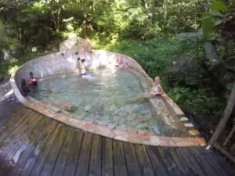

- plage de saint-anne :
- nous pouvons aussi faire du kayak dans la mangrove, à la mer ou à la rivière :
- il ya des locations de jet ski un peu partout sur les plages :
- Si vous n'aimer pas l'eau frode vous avez la possibilité de vous baigner dans de l'eau chaude le bassin des amoureux est fait pour vous :
- bain jaune a Saint-Claude :


La guadeloupe possède beaucoup de rièvières qui se situe principalement sur la Basse-terre

et si vous n'etes pas amoureux et vous ne voulez pas voir de couple, vous pouvez aller au
Vous n'avez toujours pas trouver de plan pour ces vacances alors ces sites vous aideront a trouver votre bonheur :